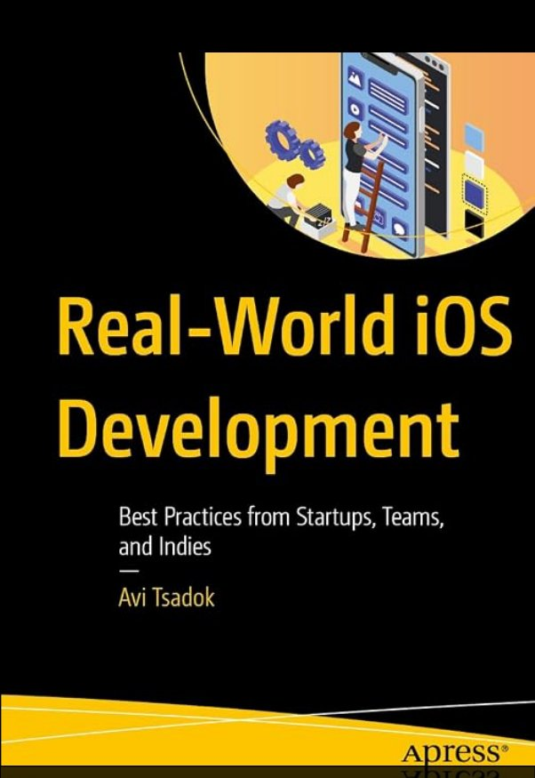
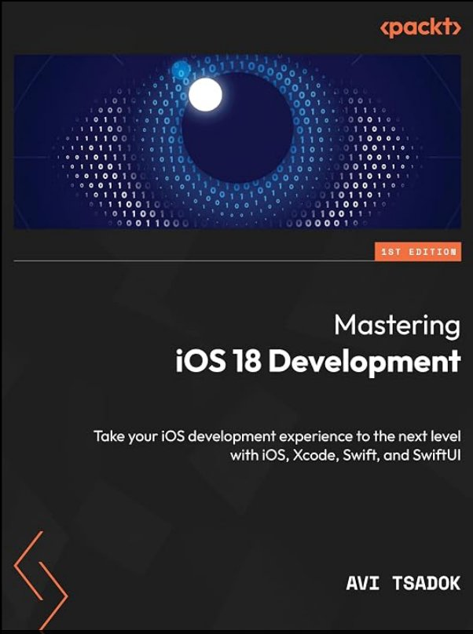
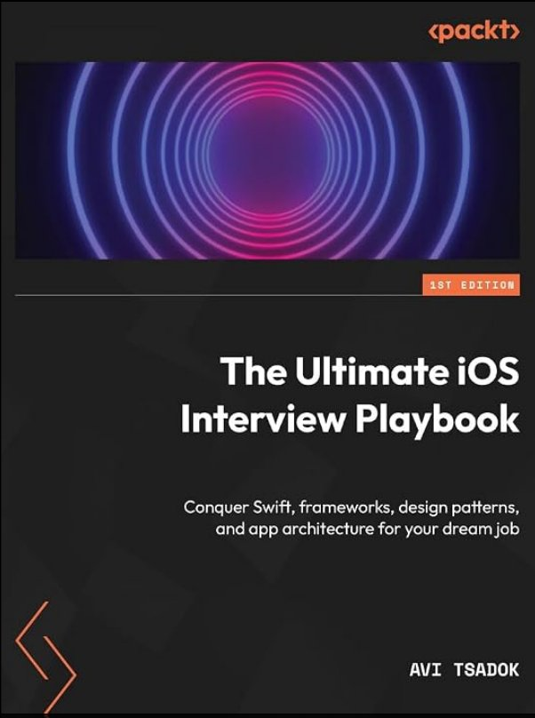

The talk in one screen
Design for Offline is all about user experience
It’s not an engineering question. Choose the product experience first, then the rail that delivers it.
Local Read
“Show me my data right now”
Optimistic UI
“Let me act now”
Collaboration
“Do not lose anyone’s intent”
- 01Offline design is about user experience
- 02Choose the experience first, then the rail
- 03Conflict resolution starts with business rules
- 04Balance user experience with complexity
- 05Use sync tools with an understanding of their guarantees
Basic concepts
The building blocks, explained
Short pages that walk through each idea from the talk, from the local store to CRDTs.
The Persistent Store
Why a local, structured store, not a cache, should drive your UI.
Read → 02 · Local ReadDelta Sync
Fetch all relevant data first, then only what changed.
Read → 03 · Optimistic UIOptimistic UI
Update the UI immediately. Confirm with the server later.
Read → 04 · Optimistic UIConflict Resolution
Conflict resolution starts with business rules, not algorithms.
Read → 05 · CollaborationCRDTs & Collaboration
Send the change, not the whole entity, and don’t lose anyone’s intent.
Read →Further reading
Go deeper
The ideas behind the sync and conflict-resolution part of the talk.
Conflict-free Replicated Data Types
Papers, talks and libraries for data types that merge without conflicts — send the change, not the whole entity.
crdt.tech ↗ HLCHybrid Logical Clocks
Ordering events across devices with clocks that combine physical time and logical counters.
University at Buffalo · PDF ↗ OTOperational Transformation
How Google Docs merges concurrent text edits — the classic alternative to CRDTs.
Google Drive Blog ↗ IdempotencyMaking retries safe with idempotent APIs
Why duplicate messages must not change the final state, and how to design APIs for safe retries.
Amazon Builders’ Library ↗How was the talk?
Two minutes of your feedback helps me make the next one better.
Books
Books by Avi Tsadok
From Core Data to testing to the iOS interview — available on Amazon.

Real-World iOS Development
Best Practices from Startups, Teams, and Indies · Apress
View on Amazon ↗
Mastering iOS 18 Development
iOS, Xcode, Swift and SwiftUI · Packt
View on Amazon ↗
The Ultimate iOS Interview Playbook
Swift, frameworks, design patterns and architecture · Packt
View on Amazon ↗Unleash Core Data
Fetching Data, Migrating, and Maintaining Persistent Stores · Apress
View on Amazon ↗Mastering Swift Package Manager
Build and Test Modular Apps Using Xcode · Apress
View on Amazon ↗Pro iOS Testing
XCTest Framework for UI and Unit Testing · Apress
View on Amazon ↗Get in touch
Let’s keep talking
Questions about offline-first, sync or anything iOS — reach out.